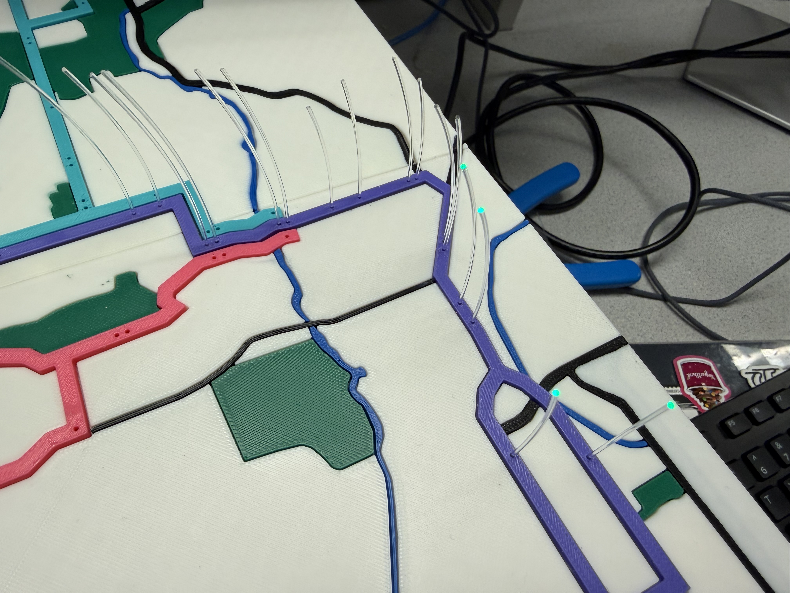

Big Red Routes

Background.
Big Red Routes is an interactive TCAT (Tompkins Consolidated Area Transit) bus tracking display designed for the Cornell and Ithaca community. It uses real-time TCAT bus data to show the current locations of buses on a physical 3D-printed map, specifically for the routes 30, 81, and 92. Our initial inspiration came from a similar project we saw online for the Manhattan subway system. Because the TCAT is such an essential part of Cornell University's transportation system and students use it daily, we wanted to create our own version for Ithaca. This is our final project for the Design with Embedded Operating Systems course, designing microcontroller-based systems using embedded Linux and debugging solutions on the target Rapsberry Pi microcontroller.
Design.
The 12" by 21" map of Ithaca was hand-traced in Figma using vectors. The designs were then exported as an SVG and imported into Fusion to extrude, color, and 3D print. We had to print the map as 6 individual "puzzle" pieces, and additionally printed 8 pillars to support and elevate the map, making room underneath to house an LED matrix, fiber optic cables, and electrical wiring. When a bus arrives at a stop, it lights up on the map, with a green light signifying that the bus is moving outbound (North to South), and a red light signifying that the bus is moving inbound (South to North). In total, we tracked 89 bus stops. With 89 stops to light up, we used 89 cuts of 1mm fiber optic cable to transfer light from an LED pixel on the matrix panel to each hole on the map that represents one bus stop. To secure each fiber optic cable over its respective LED pixel, we 3D-printed a 5mm tall board with 1mm diameter holes to hold the cables on top of the LED matrix. Big Red Routes provides users with two different modes: "Track a Route" and "Find a Route". In "Track a Route" mode, users can choose between each of the 3 routes to track. For example, if the user clicks the button for the route 30, only buses for the 30 will be displayed on the map. In "Find a Route" mode, users select a start and end destination, and an optimal path that prioritizes least transfers and least stops is lit up on the map. At startup, active buses for all 3 routes are automatically displayed on the map. A quit option is available to stop the program.
Hardware.
The hardware consists of a 16x32 Adafruit LED matrix, 4 buttons, an Adafruit piTFT display screen, an audio speaker, and a Raspberry Pi 4. The RPi and piTFT are mounted on a corner of the map, with the piTFT serving as a menu and the buttons used to navigate. The LED matrix provided a much simpler and cleaner alternative to using tens of individual LEDs in order to light up the bus stops. Because our LED matrix utilized the GPIO pins that the RPi's built-in buttons use, we attached 4 external buttons with colored button caps so that we could use other free GPIO pins, and users can see a clearer visual difference between the colors of each button. Lastly, we incorporated a speaker that announces when a bus arrives at a new stop on the specific route being tracked, providing the bus number, direction, and stop name.

caption

caption

caption
Software.
Using the Raspberry Pi OS kernel 6.1.21-v8+ #1642 SMP PREEMPT, our software components include real-time TCAT bus data, piTFT GUI, LED matrix pixel highlighting, queueing audio announcements, and GPIO button control.
TCAT API Polling
The software polls TCAT's live vehicle feed every 5 seconds to get updated bus information. We use the TCAT GTFS-realtime feed, which returns data such as the bus route, trip ID, current stop ID, vehicle ID, current status, occupancy, and timestamp. The program filters this data so we only track the routes relevant to our project. In the background, a polling loop repeatedly fetches this vehicle data and updates the current state of each bus. This lets the LED matrix and PiTFT display stay updated as buses move from stop to stop. The polling runs in its own thread so the rest of the system, like the GUI and buttons, can keep working at the same time.Dictionary Storage and LED Pixel Mapping
A major part of the project is storing bus stop information in dictionaries. Each route has its own dictionary that maps a TCAT stop ID to the stop name and the matching pixel location (x,y) on the LED matrix. The software combines these route dictionaries into global lookup tables. One dictionary maps each (route_id, stop_id) pair to a stop name, and another maps each (route_id, stop_id) pair to a pixel coordinate. When live TCAT data says a bus is at a certain stop, the program uses the bus's route ID and stop ID to look up the correct LED pixel. Then it lights that pixel on the matrix.LED Matrix Control
The LED matrix is controlled using the rgbmatrix library. We created a BusLEDMatrix class that handles clearing the matrix, setting individual pixels, converting color values, and redrawing the display. The matrix stores active pixels in a dictionary so it knows which locations should currently be lit. Different modes use the LED matrix in different ways. In route display mode, the matrix lights up the current locations of buses on the selected route. In trip-planning mode, it can highlight a selected stop, lock in a start or end stop, and then light up the full planned route after the route is found.Audio Announcements
We added a separate AudioAnnouncer class to vocalize when buses move. When a bus arrives at a stop, the program can generate a spoken message with the route number, bus ID, stop name, and direction. The messages are placed into a queue and spoken one at a time using espeak. The audio system runs in a background thread so announcements do not freeze the rest of the program.GPIO Button Control
The physical buttons are handled using the RPi.GPIO library. We used four buttons: white, green, blue, and red. Each button has a different role depending on the current screen. For example, the white button is used to select or go back, while the green, blue, and red buttons can select routes or scroll through stops. The GPIO button loop keeps track of the current screen, selected mode, selected route, trip direction, start stop, and end stop. Button presses send commands to the GUI through a queue and also send commands to the LED matrix through another queue. This keeps the button logic separate from the display logic, which makes the program easier to manage.Find a Route Algorithm
The “Find a Route” feature lets the user choose a starting stop and an ending stop then finds the best route between them, prioritizing the path with the fewest transfers. To do this, each bus stop is represented as a node in a graph. Stops on the same route are connected by “ride” edges, and valid transfer stops are connected by “transfer” edges. The algorithm searches through possible paths from the starting stop to the ending stop. Each path is scored based on the number of transfers, number of ride steps, and total path length. The best route is the one with the lowest score, meaning it uses the fewest transfers first, then the shortest ride path if there is a tie. Once the best path is found, the program returns the route segments and pixel locations. Those pixels are then lit on the LED matrix so the user can physically see the route they should take on the map.PiTFT GUI
The PiTFT interface is built using pygame. The GUI displays the home screen, route selection screen, trip finder screen, stop picker screens, selected trip summary, and live bus information. It also shows specific information for each active bus being displayed, such as bus status, last stop, destination, direction, and occupancy.- Basic
- Floorplanning
- 10 hours support
- Photography
- 20% furniture discount
- Good deals
-
$ 199
per room
- Pro
- Floorplanning
- 50 hours support
- Photography
- 50% furniture discount
- GREAT deals
-
$ 249
per room